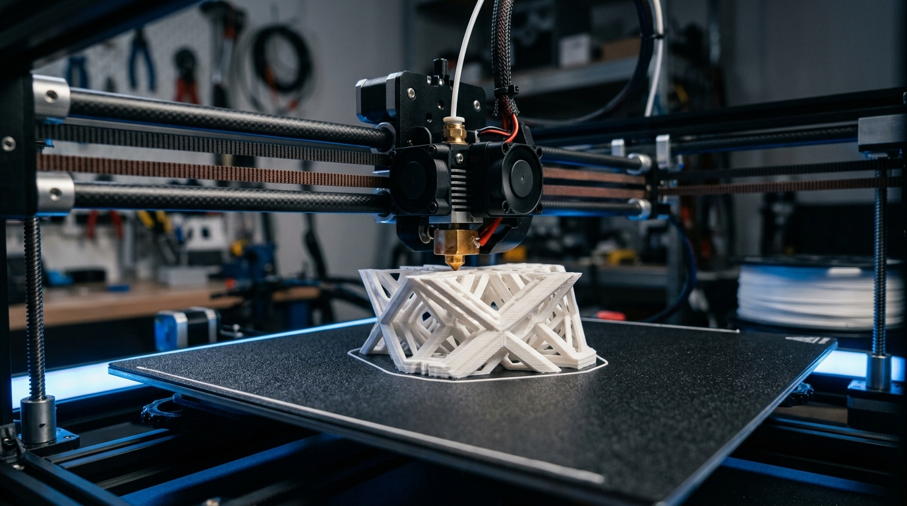
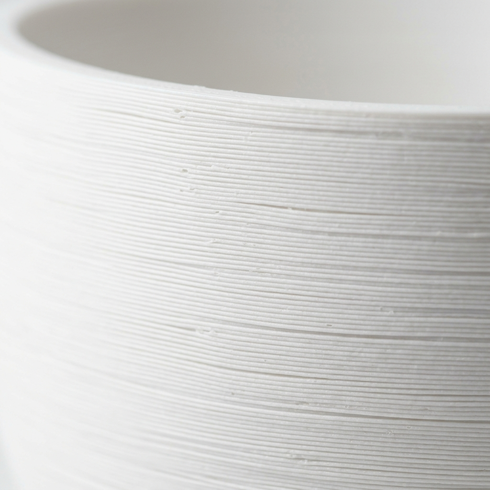

1. 大量生産の均一化に対する違和感から
私たちが暮らす現代社会は、プラスチックの射出成型による「安価で大量の工業製品」に囲まれています。それらは便利で手頃な反面、金型から抜くための制約（テーパー角やアンダーカットの回避）によって、デザインの自由度が制限され、どこか似通った形状になりがちです。
「もっと複雑で、自然界のように有機的で、見る角度によってまったく異なる表情を見せる造形は作れないだろうか？」
この純粋な問いが、私たちの3Dプリントプロダクト開発の出発点でした。

2. 数学的な美学を、物理的な空間へ
3Dプリンタの最大の魅力は、従来の切削や金型では物理的に製造不可能だった「内部中空構造」「ボロノイ分割幾何学」「ねじれを伴うスパイラル曲面」を、PC上の数式とCADデータからダイレクトに実体化できる点にあります。
たとえば、LittDesignのプランターやキャンドルホルダーは、複雑なファセット（面）が光を不均一に反射するように緻密に計算されています。窓辺に差し込む朝の光、夕暮れ時の淡い影、そして夜のキャンドルのゆらぎ。時間の経過とともに陰影が刻々と移ろう姿は、部屋の中に小さなアートピースのような静けさをもたらします。
3. 植物由来の「バイオPLA素材」を選ぶ理由
私たちが主要素材として採用している「PLA（ポリ乳酸）」は、石油由来ではなく、トウモロコシやサトウキビのデンプンを発酵させて作られる環境調和型のバイオプラスチックです。
熱溶解積層（FDM）によって生まれる微細な積層痕（レイヤーライン）は、マットなPLA樹脂と組み合わさることで、まるで白磁や和紙、焼き物のような独自のシルキーなテクスチャを生み出します。
耐熱温度が約55℃という熱に敏感な特性はありますが、室内のインテリアやステーショナリーとして寄り添うには十分な強度と、環境への優しさを兼ね備えています。

4. 岡山県津山市から、必要な分だけを丁寧に
LittDesignは、岡山県津山市に工房を構えています。巨大な工場で何万個も作り置きして余れば廃棄するような製造スタイルとは一線を画し、1つの製品に十数時間を費やし、自らの目でクオリティを確かめた「在庫のある数量」だけを皆様にお届けしています。
手にとっていただいた瞬間に、「あ、これは市販のプラスチックとは全く違う」と感じていただけるようなプロダクトを、これからも探求し続けてまいります。
LittDesign合同会社 代表。3D CAD設計とFDM積層技術を融合させたオリジナル幾何学オブジェクトの企画・設計・製造を一貫して手掛ける。